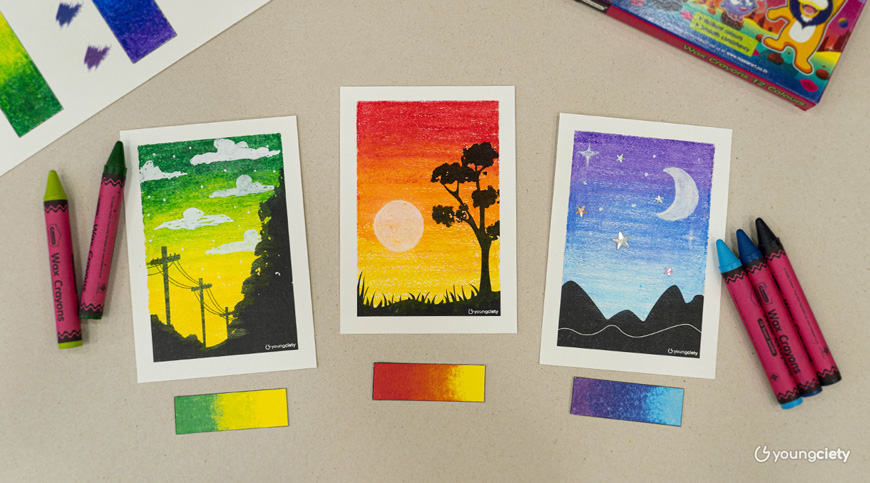

การลงสีเทียน

เป็นกิจกรรมศิลปะยอดนิยมที่เหมาะสำหรับเด็กและผู้เริ่มต้น เนื่องจากสีเทียนมีคุณสมบัติเนื้อลื่น ระบายง่าย สีสันสดใส และทนต่อการหลุดลอก โดยเทคนิคและขั้นตอนในการระบายสีเทียนให้สวยงาม

เป็นกิจกรรมศิลปะยอดนิยมที่เหมาะสำหรับเด็กและผู้เริ่มต้น เนื่องจากสีเทียนมีคุณสมบัติเนื้อลื่น ระบายง่าย สีสันสดใส และทนต่อการหลุดลอก โดยเทคนิคและขั้นตอนในการระบายสีเทียนให้สวยงาม